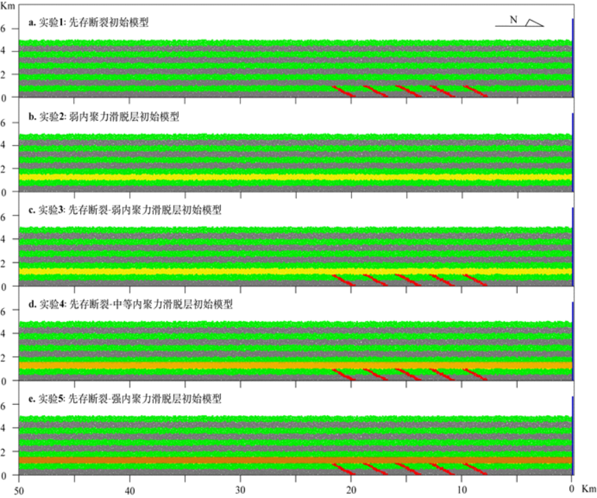
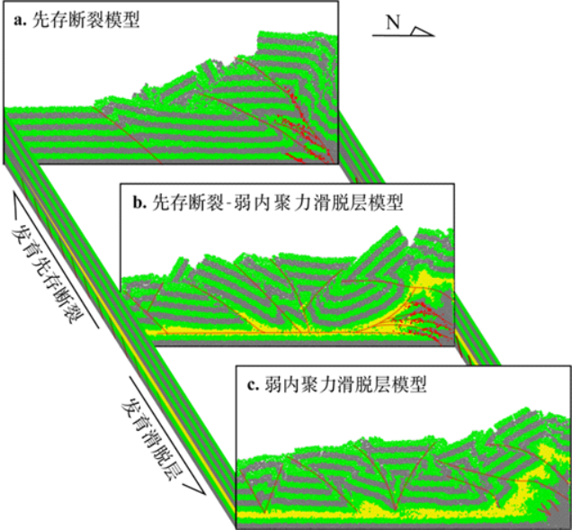
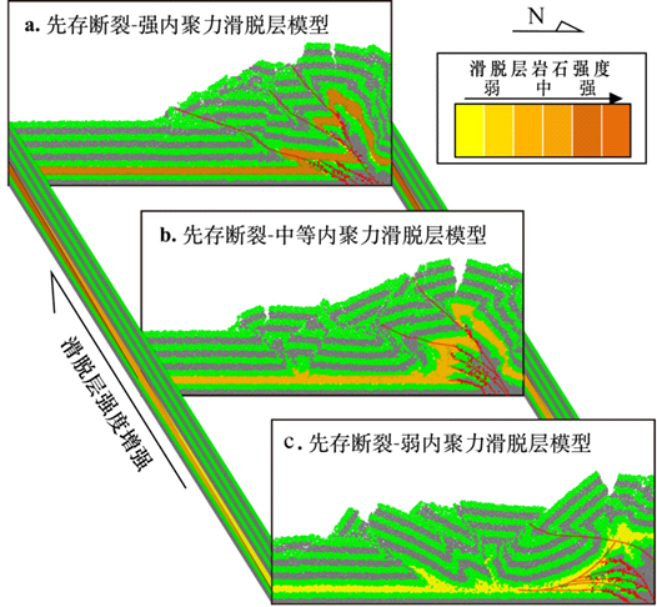

本文主要揭示滑脱层、先存断裂等因素对冲断带变形的影响，认为西南天山山前冲断带发育堆垛构造主要受控于发育上白垩统-古近系的膏盐层和前新生代的先存断裂(辛文 等.,2020)。
辛文，陈汉林，安凯旋，张欲清，杨树锋，程晓敢，林秀斌. 2020. 基于离散元数值模拟的西南天山山前冲断带构造变形控制因素研究. 地质学报, 94(6): 1704-1715.题目
基于离散元数值模拟的西南天山山前冲断带构造变形控制因素研究
作者
辛文1,2, 陈汉林1,2*, 安凯旋1,2, 张欲清1,2, 杨树锋1,2, 程晓敢1,2, 林秀斌1,2
- 浙江大学地球科学学院, 杭州, 310027
- 教育部含油气盆地构造研究中心, 杭州, 310027
摘要
西南天山山前褶皱冲断带的变形与其东侧的柯坪冲断带的大规模薄皮滑脱明显不同，它以发育“堆垛”构造和基底卷入逆冲构造为特征，是什么因素控制了该冲断带的变形。本文基于地震解释剖面，采用离散元数值模拟研究手段，单因素变量控制方法，设计了先存断裂模型，滑脱层模型和先存断裂与不同内聚力的滑脱层组合模型共5组数值模拟实验,分析西南天山山前褶皱冲断带的构造变形的控制因素。实验结果表明：滑脱层岩石强度控制了其下先存断裂向上突破的难易程度，滑脱层内聚力较强时，沿先存薄弱带易突破滑脱层形成逆冲推覆构造；滑脱层内聚力较弱时，滑脱层将发育成逆冲体系的顶板断裂，阻碍滑脱层之下单元中先存断裂后期活动向上传播，易形成相互叠覆的逆冲片。弱内聚力滑脱层发育的地区，变形前锋向前陆方向传播得更快、更远,变形主要发生在滑脱层之上单元，易形成冲起构造和三角带，滑脱层之下单元构造变形相对较弱。通过对比分析，认为西南天山山前冲断带发育堆垛构造和基底卷入逆冲构造变形，主要受控于发育上白垩统-古近系的膏盐层和前新生代的先存断裂。

初始模型设置

不同初始条件模型数值模拟结果对比

不同强度滑脱层模型数值模拟结果对比
致谢
本文模拟实验使用的是由东华理工大学李长圣自主研发的离散元数值模拟软件VBOX，在此表示感谢。